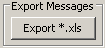

Archive Table sends for each query a request to the database server. Therefore a response can take up to 30 sec for complex filter settings.

Request all messages for time period 'day', '3 days' or 'week'.
The time period for the data base request can be set manually. In the calendar on the left side the start time can be selected. Beneath the calendar are buttons to set the time of day directly.

The selection of time is like the one in the 'user button'. In the
additional fields at the bottom of the windows the conditions for the filter can be set.
The drop down lists on the left side offers all available property keys of the messages.
In the text field in the middle is the string to match the value of the message.
On the right side are the operators ('AND', 'OR') by which the conditions are connected.
In the example the first filter condition is 'message property 'TYPE' has to be the value
'event''. It is connected with 'AND' with the second condition 'message property 'HOST' has
to be the value 'berndTest''.

Start and end time of the time period of the current selection.
Number of messages in the database response. Red background and the addition '(maximum)' indicates more items in the database that are not in the table. The number of messages are limited to achieve a better performance. In preferences (Menu 'CSS' &rarr 'CSS-applications' &rarr 'Alarm' &rarr 'JMS Logs' &rarr 'JMS log archive viewer' &rarr 'Maximum number for result') the maximum number of the result messages can be set.
With the 'Export Button' all messages of the current time period and filter settings will be written in a file in Excel format. The maximum number of messages are limited and is configurable in the preferences: Menu 'CSS' &rarr 'CSS-applications' &rarr 'Alarm' &rarr 'JMS Logs' &rarr 'JMS log archive viewer' &rarr 'Maximum number for export'

Delete all messages of the current selection from the database. ATTENTION: Even though the table displays not all messages of the current selection ALL messages will be deleted from the database.